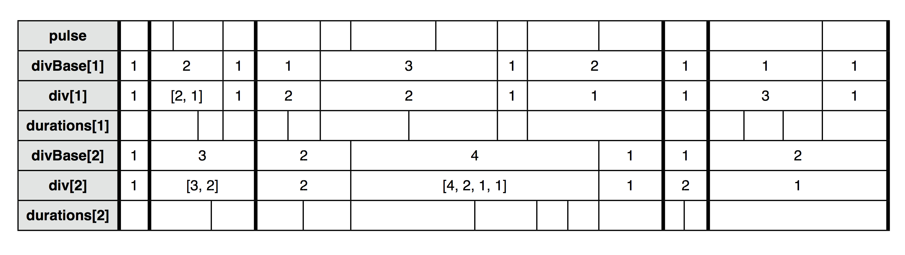

PSPdiv dynamic multi-layer pulse divider
Part of: miSCellaneous
Inherits from: Pspawner
See also: Pspawner, Sieves and Psieve patterns, Buffer Granulation, Live Granulation
PSPdiv controls the timing of one or several layers of event patterns by a single pulse pattern. In every layer single pulse durations or integer multiples ('division bases') of pulse durations can be divided by Integers or proportionally. For every layer the event pattern data can be given as event pattern or a function, which is generating an event pattern for every divisional operation. Division bases and divisions as well as the pulse itself can be controlled by patterns.
PSPdiv is built on Pspawner and therefore allows sequential or parallel spawning: the type of embedding can be sequenced by a pattern for every divisional operation. So a single layer alone can produce a number of overlapping sequences.
Time division in space notation scheme with two layers and embedding of sequential type:

A sequence of regular or irregular pulses is given as pattern of floats, these durations are marked as proportional spaces in the graphic. The sequence of divBases collects groups of pulses and divides them according to the sequence of divs. The resulting durations of each layer are again marked by proportional spacing, common entry points of layers are marked by emphasized vertical lines.
Special thanks to Ron Kuivila for developing Pspawner, it's such a versatile class !
Creation / Class Methods
*new (pulse, evPat, div, divBase, divType)
Creates a new PSPdiv object.
pulse - Duration or pattern of durations, given as beats. Defaults to 1.
evPat - An event pattern, a Function generating event patterns or: a SequenceableCollection thereof.
If an event pattern is given, the durations of the current division, calculated from current values of
pulse, div and divBase, are inserted with the 'dur' key, there's no use in passing durations in
the event pattern in this case.
If a Function is given, it will be passed 4 arguments:
.) an array of durations of the current division, based on the following arguments
.) the current division number div
.) the current division base number divBase
.) the current division type divType ('seq' or 'par')
The Function should return the event pattern to be scheduled for this division. The typical
application would be using the array of durations in a Pseq with repeats = 1 as 'dur' value,
though you are free to let it return any kind of event pattern.
Layers are slightly shifted, so that the event from a pattern of lower index is calculated
before an event from a pattern of higher index, if events are scheduled to happen at the same time.
div - Integer or array of array of numbers, determining a division of divBase * pulse beats or
a pattern returning such or: a SequenceableCollection thereof. Defaults to 1.
A single array of numbers is interpreted as indicator for several layers (see note below),
hence the doubled array is necessary for a proportional division.
divBase - Integer determining the number of multiples of pulse to be used as base of division or
a pattern returning such or: a SequenceableCollection thereof. Defaults to 1.
divType - Symbol 'seq' or 'par' or or a pattern returning such or: a SequenceableCollection thereof.
Defaults to 'seq'. Determines the type of embedding according to Pspawner's convention.
NOTE: If one of the arguments evPat, div, divBase and divType is passed as SequenceableCollection of size > 1,
a multitude of layers is assumed and the other args are interpreted accordingly. To avoid ambiguities only one
size > 1 is allowed at maximum amongst these args (but more than one of them can be a SequenceableCollection
of this size). Consequently a proportional div arg for one layer must be passed in double brackets.
Examples
(
s = Server.local;
Server.default = s;
s.boot;
)
Ex. 1: Basic functionality with one layer
// test SynthDef
(
SynthDef(\varKlank, { |freq = 500, att = 0.01, rel = 0.1, sourceType = 0,
ringtime = 1, pan = 0, amp = 0.1|
var sig, source = Select.ar(sourceType, [
BrownNoise.ar(0.05),
Impulse.ar(0)
]);
sig = DynKlank.ar(`[freq * (1..8), amp * (8..1)/8, ringtime * (1!8)], source);
sig = Splay.ar(sig);
OffsetOut.ar(0, Balance2.ar(sig[0], sig[1], pan) *
EnvGen.ar(Env.perc(att, rel), doneAction: 2))
}).add;
)
(
// base pattern, no need to provide durations, as they are calculated from other PSPdiv args
p = Pbind(
\instrument, \varKlank,
\midinote, Pwhite(65, 90),
\amp, 0.1,
\att, Pwhite(0.005, 0.02),
\rel, 2,
\sourceType, 1,
\ringtime, 2,
\pan, Pwhite(-0.3, 0.3)
);
)
// div = 1, pulse not divided
x = PSPdiv(0.8, p, 1).play;
x.stop
// div as array of two items leads to expansion into two layers
x = PSPdiv(0.8, p, [2, 1]).play;
x.stop
// here div is interpreted as proportion for one layer
x = PSPdiv(0.8, p, [[3, 1]] ).play;
x.stop
// specifying per layer
x = PSPdiv(0.8, [p, Pbindf(p, \rel, 0.1)], [1, [3, 2, 1]] ).play;
x.stop
// use with PL proxies
(
// defaults, want to replace later on
~pulse = 0.8;
~div = 1;
~divBase = 1;
~divType = \seq;
q = PSPdiv(PL(\pulse), p, PL(\div), PL(\divBase), PL(\divType));
)
// start playing
x = q.play
// replace on the fly:
// alternating tuplets
~div = PLseq([2, 3]);
// "dotted" notes, now we don't need double brackets as above as it's the source of the PL,
// not the PSPdiv arg
~div = [3, 1];
// acceleration and deceleration by pulse pattern control
~pulse = Pseg(PLseq([0.8, 0.3]), 10)
(
// use divBase for base length control of tuplets
// here this could be written with div sequencing only also
~pulse = 1;
~div = PLseq([2, 6]);
~divBase = PLseq([1, 1, 2]);
)
x.stop
Ex. 2: Parallel embedding with one layer
// SynthDef from Ex. 1
(
// default values for proxies
~pulse = 0.5;
~div = PLseq([6, 4]);
~divBase = 2;
~divType = \par;
// evPat argument now given as Function
// this especially makes sense in combination with parallel embedding
// otherwise parallel patterns would poll event data from a single event stream
p = { |durs|
// use durs calculated from pulse, div and divBase
var size = durs.size;
Pbind(
\dur, Pseq(durs),
\instrument, \varKlank,
\midinote, Pseq(~baseStream.next + rrand(0, 7) + (0..size)),
\amp, 0.1,
\att, Pwhite(0.005, 0.02),
\rel, ~releaseStream.next,
\ringtime, 2,
\sourceType, 1,
\pan, ~panStream.next
)
};
// these streams deliver items for each embedding
~baseStream = PLseq([60, 70, 80]).iter;
~releaseStream = Pn(Pshuf([2, 0.6, 0.2])).iter;
~panStream = Pwhite(-0.8, 0.8).iter;
// we still have only one layer, but it will overlap
q = PSPdiv(PL(\pulse), p, PL(\div), PL(\divBase), PL(\divType));
)
// start
x = q.play
// change to sequential embedding
~divType = \seq;
// type of embedding can be sequenced too
~divType = PLrand([\seq, \par, \par]);
// default divBase was 2, allow shorter division bases
~divBase = PLrand([1, 2]);
x.stop
Ex. 3: Ornamenting a line with a second layer
// SynthDef from Ex. 1
(
p = Pbind(
\instrument, \varKlank,
// basic melodic line, data stored in variable for use by ornamentation
\midinote, (Pn(Pshuf([72, 74, 76, 79, 81])).collect { |x| ~m = x; }) +
// random broadening of line
PLrand([[-14, 0], [0, 14]]),
\amp, 0.15,
\att, Pwhite(0.01, 0.02),
\rel, 3,
\sourceType, 1,
\ringtime, 3,
\pan, Pwhite(-0.3, 0.3)
);
~releaseStream = Pn(Pshuf([2, 0.5, 0.2])).iter;
~panStream = Pwhite(-0.8, 0.8).iter;
~dirStream = PLseq([1, -1]).iter;
// defines trill pattern for every event from melodic line
q = { |durs|
// use durs calculated from pulse, div and divBase
var size = durs.size, midibase = ~m;
Pbind(
\dur, Pseq(durs),
\instrument, \varKlank,
// define trill alternating above and below basic melodic line
\midinote, Pn(rrand(4, 9) * ~dirStream.next, size) + PLseq([0, 1]) + midibase,
\amp, 0.1,
\att, Pwhite(0.005, 0.02),
\rel, ~releaseStream.next,
\ringtime, 2,
\sourceType, 1,
\pan, ~panStream.next
)
};
// default values for PL proxies, want to replace later on
~pulse = PLshufn([1, 1, 2]/2);
~div = PLrand([4, 6, 8]);
~divBase = 1;
~divType = \seq;
r = PSPdiv(
PL(\pulse),
[p, q],
[1, PL(\div)],
[1, PL(\divBase)],
[1, PL(\divType)]
);
)
// start with sequential embedding: trill on every note, variuos divisions
x = r.play
// change to parallel embedding of trills, overlapping
(
~divBase = 2;
~div = PLrand([8, 12, 16]);
~divType = \par;
)
x.stop
Ex. 4: Polyrhythmics of several layers
// SynthDef from Ex. 1
// three layers using varying pentatonic scales shifted by sixth tones
(
// staccato layer
p = Pbind(
\instrument, \varKlank,
\midinote, PLshufn([0, 2, 4, 7, 9]) + Pn(Pstutter(15, Pwhite(80, 100, 1))) +
0.6 + [0, -14],
// use some rests
\amp, 0.06,
\att, Pwhite(0.01, 0.02),
\rel, 0.15,
\sourceType, 1,
\ringtime, 3,
\pan, Pwhite(-0.3, 0.3)
);
// long release layer
q = Pbind(
\instrument, \varKlank,
\midinote, PLshufn([0, 2, 4, 7, 9]) + Pn(Pstutter(20, Pwhite(60, 80, 1))) +
PLrand([[-14, 0]]) + PLrand([0, 12]),
\amp, 0.08,
\att, Pwhite(0.01, 0.02),
\rel, 2,
\sourceType, 1,
\ringtime, 2,
\pan, Pwhite(-0.3, 0.3)
);
// "drum" layer
r = Pbind(
\instrument, \varKlank,
\midinote, PLshufn([0, 2, 4, 7, 9]) + Pn(Pstutter(25, Pwhite(35, 50, 1))) +
0.3 + [-12, 0],
\amp, 0.02,
\att, Pwhite(0.01, 0.02),
\rel, 0.35,
\sourceType, 0,
\ringtime, 1,
\pan, Pwhite(-0.3, 0.3)
);
// default values for PL proxies, want to replace later on
~pulse = PLshufn([1, 1, 2] * 5/9);
~div0 = PLshufn([4, 8]);
~div1 = PLshufn([2, 3, 4]);
~div2 = PLshufn([2, 4]);
~divBase = 1;
~divType = \seq;
u = PSPdiv(
PL(\pulse),
[p, q, r],
[PL(\div0), PL(\div1), PL(\div2)],
// will be exapanded to array of 3 PLs with same symbol reference
PL(\divBase),
PL(\divType)
);
)
// start
x = u.play
// vary pulse
~pulse = PLshufn([1, 1.5, 2.5, 3] * 5/9);
~pulse = 1;
~div0 = PLshufn([4, 6, 8]);
~div2 = PLshufn([2, 4, 6]);
~pulse = PLshufn([1, 1, 9/8]);
x.stop;
Ex. 5: Granulation, control of many layers
// SynthDef from Ex. 1
(
~amp = 0.05;
~att = 0.005;
~rel = 0.05;
~sourceType = 0;
~ringtime = 1;
~pan = PLseq([0.8, -0.8]);
// Pbind generator, patterns will stick to midinotes
p = { |midinote| Pbind(
\instrument, \varKlank,
\midinote, midinote,
\amp, PL(\amp),
\att, PL(\att),
\rel, PL(\rel),
\sourceType, PL(\sourceType),
\ringtime, PL(\ringtime),
\pan, PL(\pan)
) };
// produce an array of Pbinds, covering a whole tone cluster
q = ((1, 3..51) + 40).collect(p.(_));
~size = q.size;
// same pattern source for each PL,
// but for each midinote divisions per pulse can vary
~div = Pfunc { (2 ** (1..4)).choose.asInteger };
~divBase = 1;
~pulse = 1;
~rel = 0.015;
~sourceType = 1;
// as q is an array the args 'div' and 'divBase' will be expanded to arrays
u = PSPdiv(PL(\pulse), q, PL(\div), PL(\divBase));
)
x = u.play
// this setting exchanges the source of all PL patterns expanded as 'div' arg
~div = Pfunc { (2 ** (1..6)).choose.asInteger }
// also with divBase, layers are decorrelated as each stream from this pattern acts differently
~divBase = PLrand([1, 2])
~divBase = PLrand([1, 2, 3])
~pulse = 1/4
x.stop